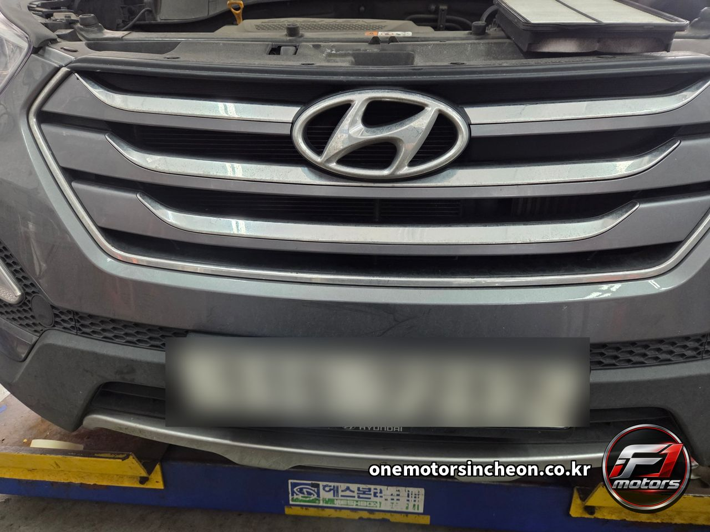
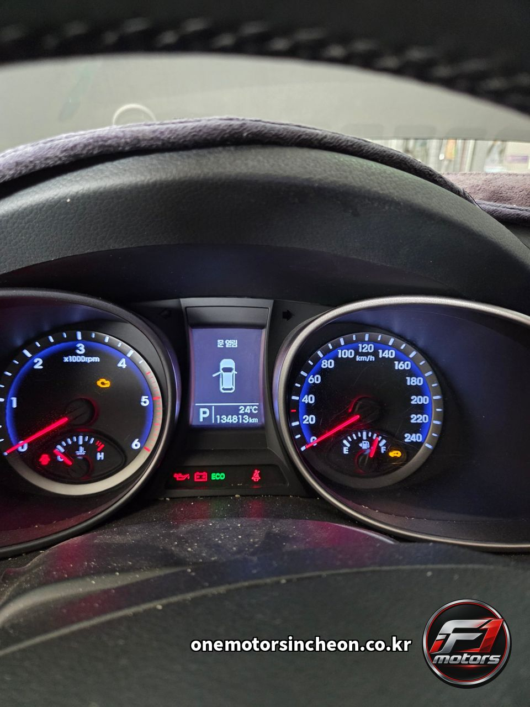
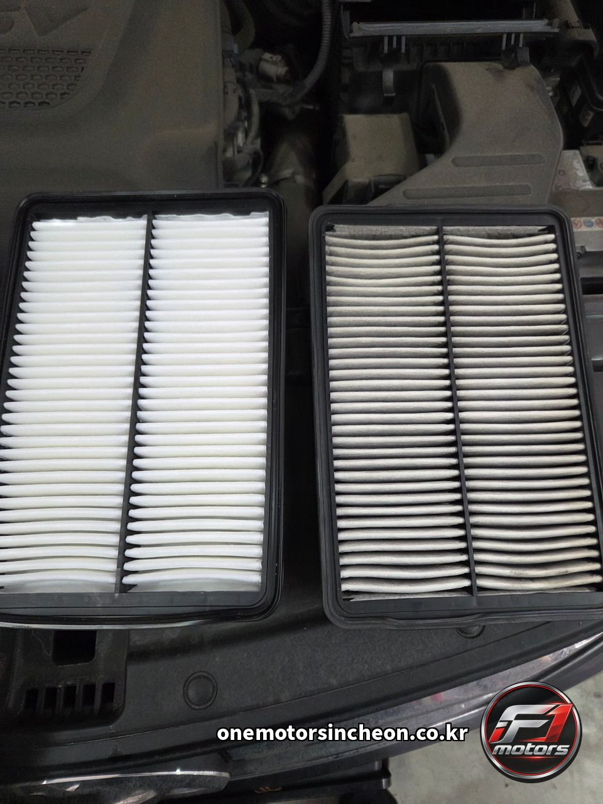
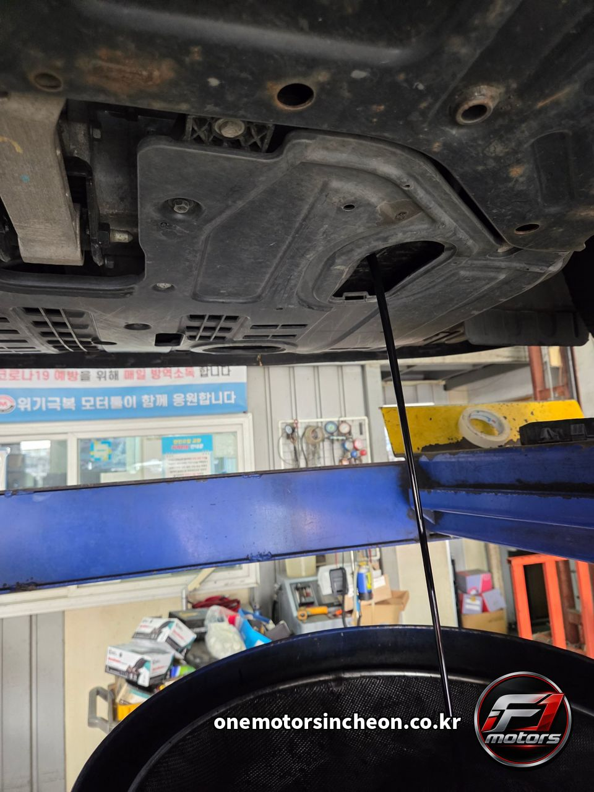
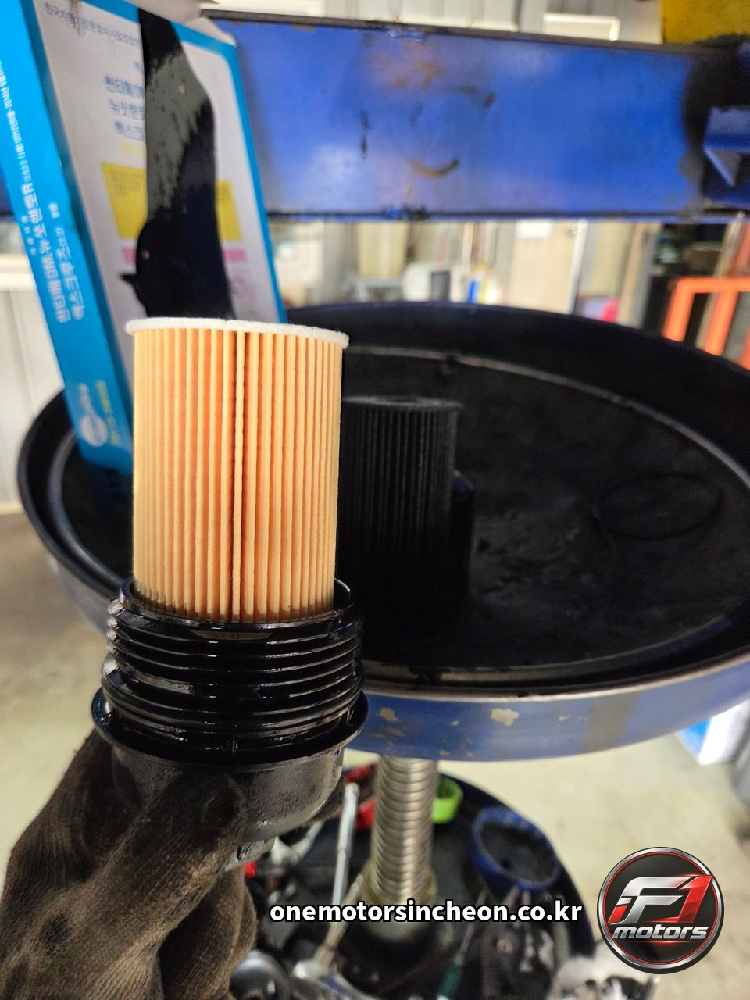
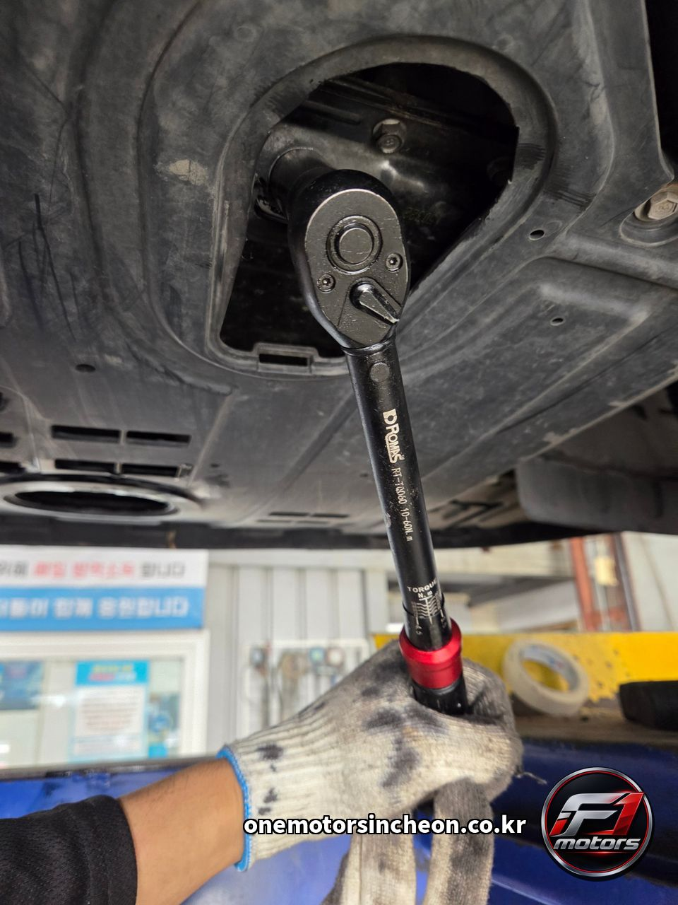
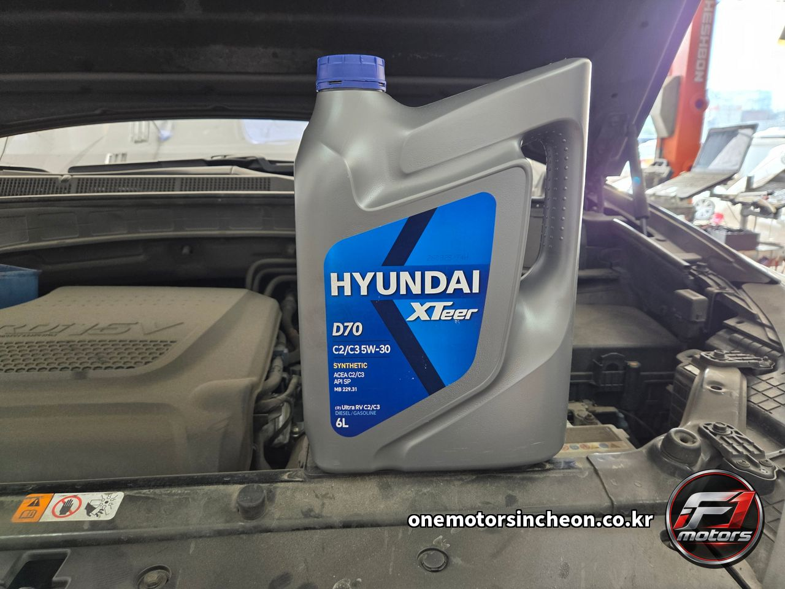
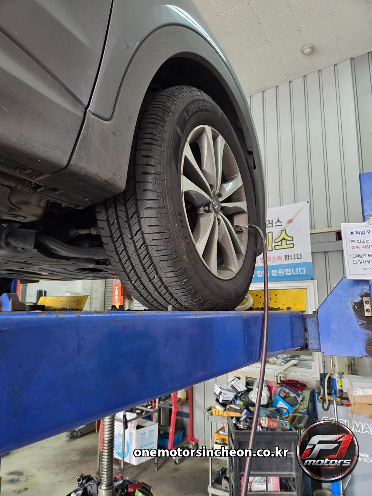
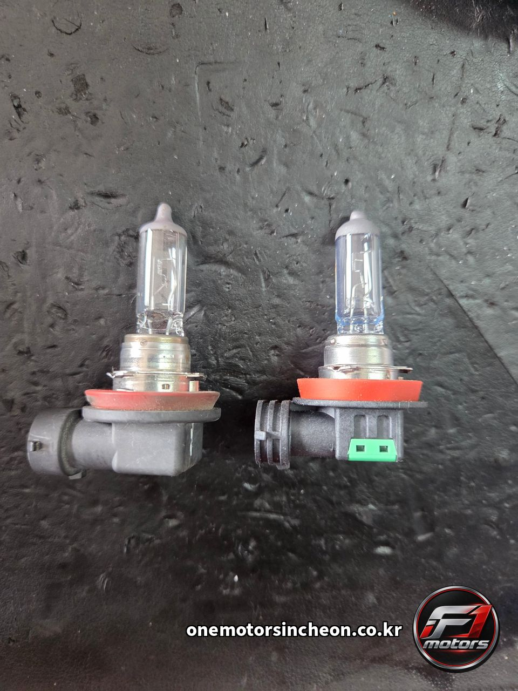
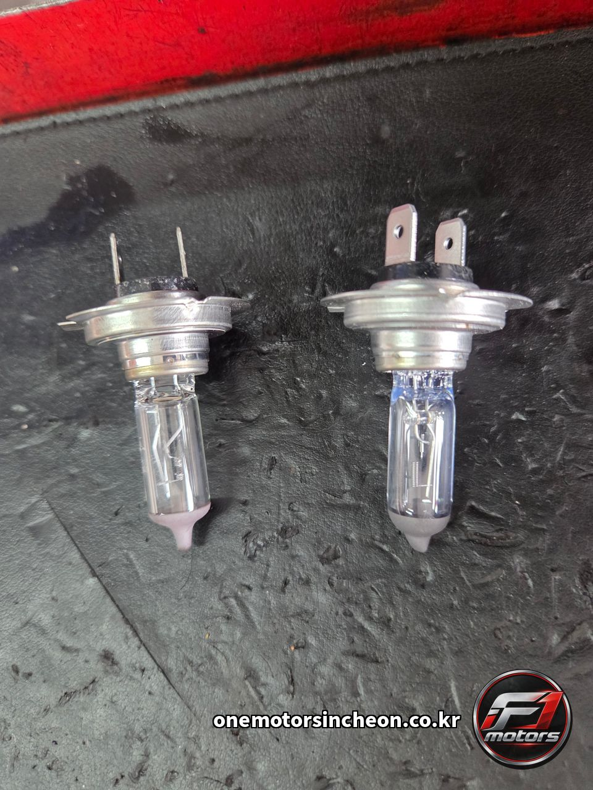

고장사례 및 검색 › 산타페 DM
현대 산타페 DM 디젤 경정비 — 엔진오일 · 오일필터 · 에어클리너 교환과 전조등 · 안개등 전구 교환
- 차량
- 현대 산타페 DM · 134,813 km
- 증상
- 엔진오일 교환 주기가 되어 오셨습니다. 전조등과 안개등 전구도 함께 봐 달라고 하셨습니다
- 원인
- 이 차는 DPF가 달린 커먼레일 디젤입니다. 매연필터에 쌓인 그을음을 태우는 재생 과정에서 후분사된 연료의 일부가 실린더 벽을 타고 오일팬으로 흘러 들어갑니다. 이것을 연료 희석이라고 합니다. 희석이 진행되면 오일의 점도가 설계값 아래로 떨어지고, 유막이 얇아져 베어링과 캠 쪽 마모가 빨라집니다. 겉보기 색만으로는 판단되지 않기 때문에, 디젤은 가솔린과 같은 간격으로 끌면 안 됩니다.
넣은 오일은 ACEA C2/C3 규격의 5W-30 합성유입니다. C 등급은 황·인·황산회분 함량을 낮춘 저회분(Low SAPS) 오일입니다. 일반 오일을 넣으면 연소되지 않은 회분이 DPF 내부에 재로 쌓여 재생으로 태워지지 않고 그대로 누적됩니다. DPF 차량에서 오일 규격을 지켜야 하는 이유가 여기 있습니다.
오일필터는 카트리지 방식입니다. 금속 캔째로 돌려 빼는 구조가 아니라 하우징 캡을 열고 엘리먼트만 교체합니다. 이때 캡의 O링도 함께 교환해야 합니다. 굳은 O링을 재사용하면 하우징 접합면에서 누유가 생깁니다.
드레인 플러그는 토크렌치로 제작사 규정 토크에 맞춰 조였습니다. 오일팬이 알루미늄 합금이라 과토크가 걸리면 암나사가 소성 변형되어 뭉개집니다. 한 번 손상되면 탭 재가공이나 헬리코일 삽입, 심하면 오일팬 교환까지 갑니다. 반대로 토크가 부족하면 와셔가 제대로 눌리지 않아 주행 중 누유로 이어집니다.
에어클리너는 흡기 저항과 직결됩니다. 여과지가 막히면 흡입 공기량이 줄어 체적효율이 떨어지고, 커먼레일 디젤은 공기량 센서 측정값을 기준으로 EGR과 분사량을 제어하기 때문에 매연과 연비에 바로 나타납니다.
전조등과 안개등은 할로겐 전구입니다. 사진에서 탈거품 석영관 안쪽이 뿌옇게 흐려진 것이 보이실 겁니다. 할로겐 사이클로 되돌아가지 못한 텅스텐이 관 내벽에 침착되는 흑화 현상입니다. 필라멘트가 끊어지지 않아도 광속은 수명 후반으로 갈수록 눈에 띄게 떨어집니다. 운전자는 이 변화를 서서히 겪기 때문에 밤길이 어두워진 것을 시력 탓으로 돌리는 경우가 많습니다. 좌우는 광속과 색온도를 맞추기 위해 함께 교환하는 것이 맞고, 새 전구는 석영관을 맨손으로 잡지 않습니다. 유분이 묻은 자리가 국부 과열되어 실투나 조기 파손의 원인이 됩니다. - 수리내역
- 리프트 상승 후 엔진오일 배출 · 오일필터 교환 · 에어클리너 교환 · 드레인 플러그 토크렌치 규정 체결 · 엔진오일 주입 · 전조등 전구 교환 · 안개등 전구 교환 · 하부 육안 점검 · 점등 확인 · 오일량 확인
- 교환부품
- 엔진오일 (디젤용 5W-30 합성유) · 오일필터 · 에어클리너 · 전조등 전구 · 안개등 전구
정비 사진 10장










이런 증상으로 찾아오십니다
- 산타페 DM 엔진오일 교환
- DPF 차량 엔진오일
- 저회분 엔진오일
- Low SAPS 엔진오일
- ACEA C3 엔진오일
- 엔진오일 연료 희석
- 디젤 오일 묽어짐
- 할로겐 전구 흑화
- 전구 광속 저하
- 오일필터 오링 누유
- 산타페 엔진오일 교환 주기
- 산타페 디젤 엔진오일
- 디젤 엔진오일 교환
- 오일필터 교환
- 카트리지 오일필터
- 에어클리너 교환
- 에어필터 언제 갈아요
- 드레인 플러그 토크
- 오일팬 나사산 뭉개짐
- 산타페 전조등 전구 교환
- 산타페 안개등 전구 교환
- 전조등 전구 교환
- 안개등 전구 교환
- 할로겐 전구 교환
- H7 전구
- H11 전구
- 한쪽 헤드라이트만 어두워요
- 밤에 앞이 잘 안 보여요
- 안개등이 안 들어와요
- 전구 경고등이 떴어요
- 헤드라이트가 누렇게 보여요
- 매연이 늘고 연비가 떨어졌어요
- 디젤 엔진오일은 몇 km마다 갈아야 하나요
- 디젤차 오일이 묽어지는 이유
- 전구 한쪽만 나갔는데 양쪽 다 갈아야 하나요
- 엔진오일만 갈아도 되나요
- 안개등 전구만 교환 가능한가요
- 엔진오일 교환하면서 하부도 봐주나요
- 13만km 산타페 소모품 뭐부터
- 인천 산타페 엔진오일 교환
- 인천 전조등 전구 교환
- 인천 안개등 교환
- 인천 디젤 경정비
- 인천 수입차 국산차 경정비
- 제물포구 자동차정비
- 인천 송림동 정비소
- F1모터스
- 인천에프원모터스
비슷한 증상이 있으시면 전화로 상담해 주세요. 차종과 연식, 증상만 알려주시면 예상 원인을 안내해 드립니다.
인천에프원모터스는 제조사 공식 서비스센터가 아닌 독립 정비업체입니다. 정비 내용은 차량 상태에 따라 달라질 수 있습니다.